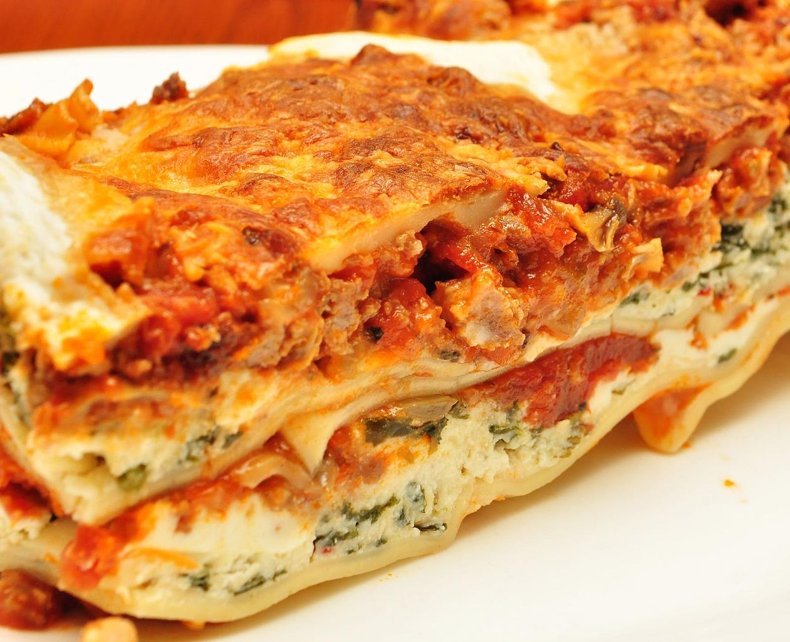

Brenda's Lasagna Recipe

Description
A rich and creamy whole-wheat pasta dish filled layer by layer with refreshingly fresh onions and garlic, lathered in a succulent sauce and topped with imported, premium quality mozzarella.
Ingredients
Package lasagna noodles
Lean ground beef
Salt and Pepper to taste
Spaghetti sauce
Garlic
Steps
- Bring a large pot of lightly salted water to a boil. Add pasta and cook for 8 to 10 minutes or until al dente; drain.
- Preheat oven to 350 degrees F (175 degrees C). In a large skillet over medium-high heat, brown beef and season with salt and pepper; drain. Stir in spaghetti sauce and garlic and simmer 5 minutes.
- In a medium bowl, combine mozzarella, Cheddar and ricotta; stir well. In 9x13 inch pan, alternate layers of noodles, meat mixture and cheese mixture until pan is filled.
- Bake in preheated oven for 30 minutes, or until cheese is melted and bubbly.